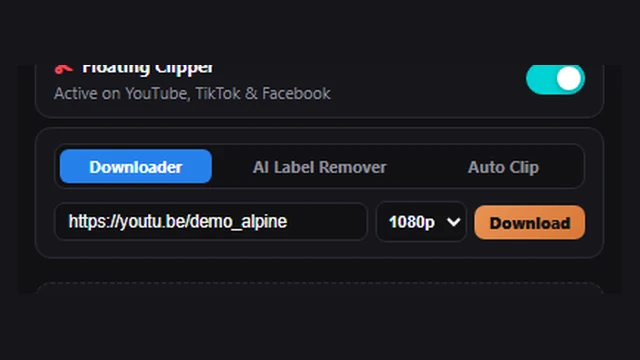
Instant Link Downloader
Paste a link, pick the quality, and save the whole video. Check progress in the Activity Stream and start editing from Clips.
Turn a video link into editable highlights with Auto Clip. Fine-tune your Shorts, Reels, and TikToks in Studio for Windows.
Auto Clip
Paste a video link and get editable vertical highlights for Shorts, Reels, and TikToks.
Make up to two drafts per run on Free, or unlock up to ten drafts and custom lengths on paid plans.
Trim long pauses, generate captions, or add a spoken intro and sound effects. Fine-tune each draft on its own Studio timeline.

Features

Paste a link, pick the quality, and save the whole video. Check progress in the Activity Stream and start editing from Clips.
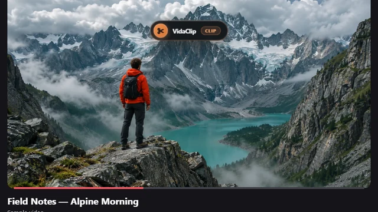
Mark start and end times as you watch and send clips to Desktop. Use the extension on supported YouTube, Facebook, Instagram, and TikTok pages.
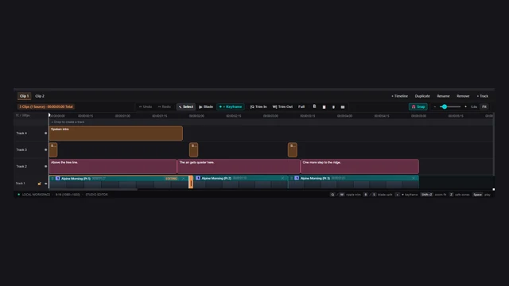
Move split clips across tracks, add tracks by dragging upward, and use waveforms, snapping, ripple trim, and Alt + scroll zoom. Animate position and scale, or reopen a draft from the project library.
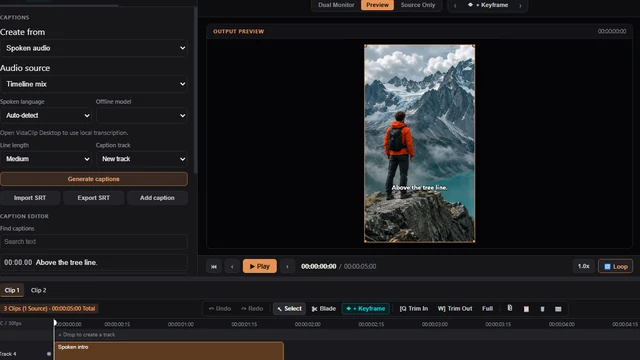
Generate captions locally, style them on the timeline, and import or export SRT. Add titles, stickers, voiceovers, and sound effects.
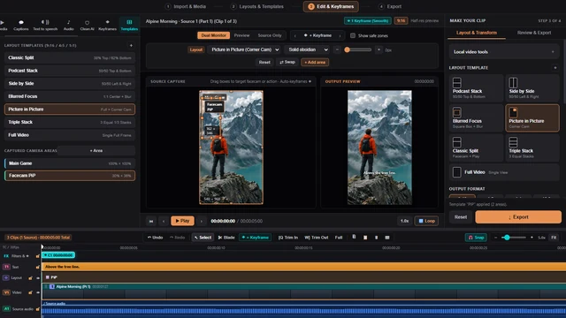
Reframe for vertical, square, portrait, or landscape. Pick a split, stack, or picture-in-picture layout and place subjects inside social safe zones.

Finish an edit and publish it on the Free plan. Studio exports are unlimited and carry no VidaClip watermark.
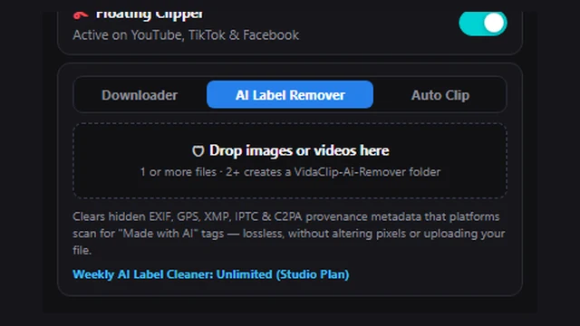
Batch-clean supported embedded metadata, including C2PA, from photos and videos. See what was found and save cleaned copies locally.
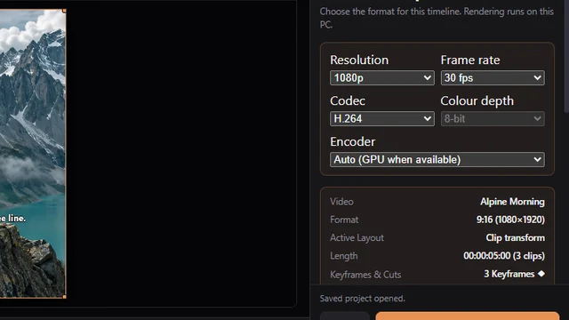
Apply transitions and effects, create speed ramps or freeze frames, and stabilize or denoise footage. Edit with lighter previews and export locally from the original files.
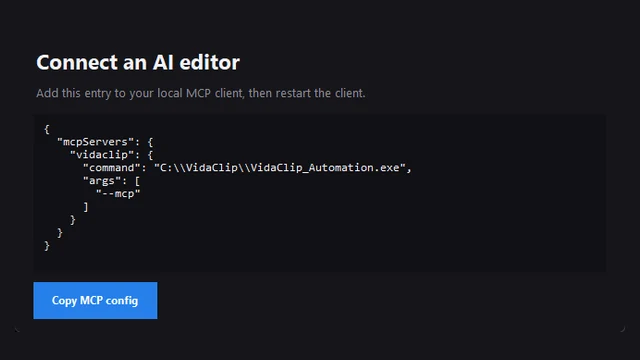
Connect an MCP client or run scripts to import media, edit timelines, generate speech and captions, and start exports.
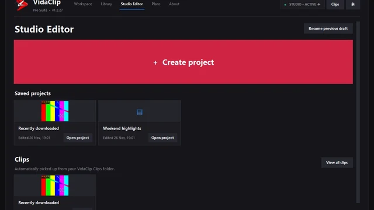
Start from a blank project or reopen a draft. Find saved clips automatically and import your own videos, photos, and audio.
Inside VidaClip Studio
Start from a clean project, work from your Clip Library, or reframe with Quick Clip layouts like side-by-side and picture-in-picture. Studio gives you the space to build the full sequence.
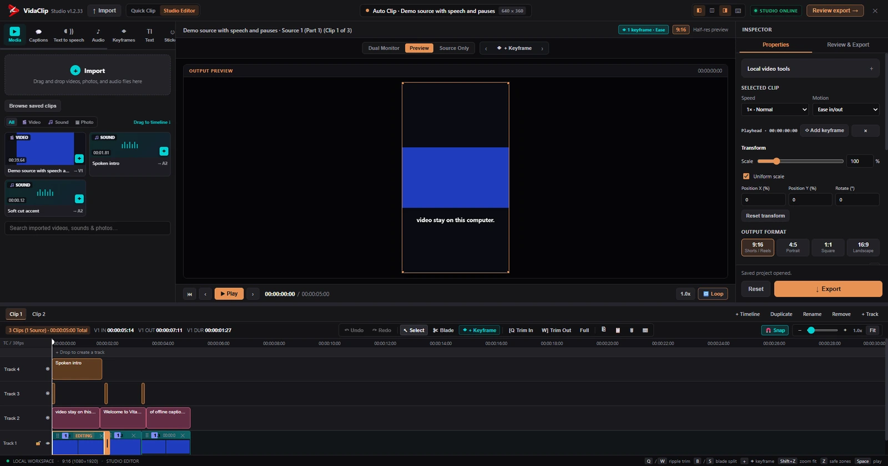
Product screenshots
Follow the workflow from capturing a moment in the browser to finishing the edit in Studio.
Preview of the v1.2.19 extension.
Release history
Generate vertical drafts from a link, trim pauses, and review each cut on its own timeline.
Move clips between tracks, adjust scale and rotation, and resize titles or stickers on the canvas.
Plans
Every plan includes Studio, local rendering, unlimited Studio exports, and zero VidaClip watermarks. Paid plans raise the daily direct clip limit and unlock more Auto Clip settings.
$0 / forever
$9.99 / month
$19.99 / month
$39.99 / month
Prices in USD. Checkout and billing are handled by Lemon Squeezy.
Desktop release preview
Send feedback or report an error right from VidaClip.
Open About → Send feedback to suggest a feature, report a bug, or leave a note.
Prepare an email draft with the app version and error code after a failed Workspace job or Studio export. Review it before sending.
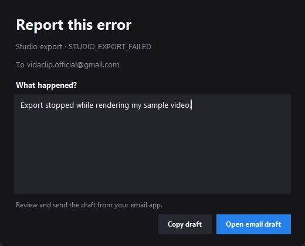
Help
Download the ZIP, extract it into a new folder, and run VidaClip_Desktop.exe. Keep the two executables and the shared _internal folder together. VidaClip also checks for updates in the app under Plans.
You can paste links into Desktop or import local media without the extension. The browser extension is for marking clip start and end times as you watch videos in your browser.
Studio editing, rendering, and transcription run on your PC. Fetching linked videos, downloading models or updates, and activating a paid license require an internet connection.
Use an individual video link that you have permission to clip. Availability varies by platform and video. You can also import a local copy you’re allowed to edit.
Open the Lemon Squeezy billing portal from your purchase email to manage or cancel your subscription.
Starting with Desktop v1.2.34, open About → Send feedback or choose Report this error after a failed Workspace job or Studio export. Review the draft in your email app before sending it. You can also email VidaClip support.
It lets a connected assistant or script work on your Studio project. In Desktop, open Studio Editor → Automation → Copy MCP config. Regular editing and Auto Clip run from the main Desktop app.
v1.2.33 Early Access
Use the browser extension to mark clips while you watch, then edit and export in VidaClip Desktop.